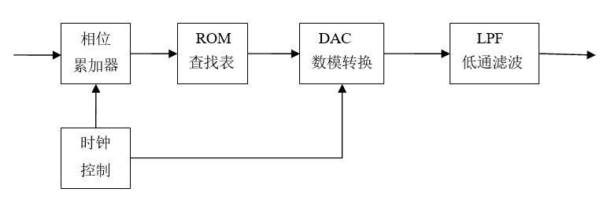
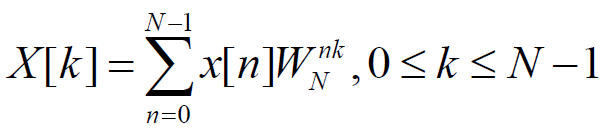
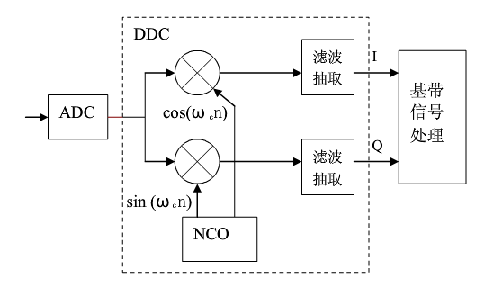
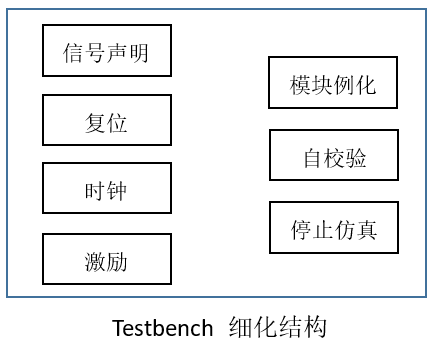

7.6 Verilog DDS 设计
DDS 原理 DDS（直接周波数合成）技術は、ナイキスト標本化定理とデジタル処理技術に基づき、一連のアナログ信号を歪みなく標本化し、得られたデジタル信号をメモリに格納し...

8.1 Verilog 数值转换
本节では、符号付き数の10進数と2進数の表現、およびいくつかの数値変換について簡単にまとめます。 幅が DW の2の補数形式のデータ dbin を定義すると、その表す符号付き数は...

7.5 Verilog FFT 设计
FFT（Fast Fourier Transform、高速フーリエ変換）は、DFT（離散フーリエ変換）の効率的なアルゴリズムです。時間周波数変換解析を基礎とするデジタル処理方法において、重要な...

7.4 Verilog CIC 滤波器设计
積分櫛形フィルタ（CIC、Cascaded Integrator Comb）は、一般的にデジタルダウンコンバータ（DDC）およびデジタルアップコンバータ（DUC）システムで使用されます。CICフィルタは構造が簡単で、乗算器がなく...

7.3 Verilog 串行 FIR 滤波器设计
シリアルFIRフィルタ設計 設計説明 設計パラメータは変更されず、パラレルFIRフィルタのパラメータと同じです。つまり、入力周波数が7.5 MHzと250 KHzの正弦波混合信号は、FIR...

7.2 Verilog 并行 FIR 滤波器设计
FIR（Finite Impulse Response）フィルタは、有限長単位インパルス応答フィルタであり、非再帰型フィルタとも呼ばれます。FIRフィルタは厳密な線形位相周波数特性を持ち、同時にその...

7.1 Verilog 除法器设计
除算器の原理（固定小数点） 10進数の除算と同様に、27を5で割る計算プロセスは次のようになります。 除算演算のプロセスは次のとおりです。 (1) 被除数の上位数ビットのデータを取得し、ビット幅を除数の...

6.7 Verilog 流水线
キーワード：パイプライン、乗算器 ハードウェア記述言語の顕著な利点の1つは、命令実行の並列性です。複数のステートメントが同じクロックサイクル内で複数の信号データを並列に処理できます。 しかし、データ...

6.6 Verilog 仿真激励
キーワード：testbench、シミュレーション、ファイル読み書き Verilogコードの設計が完了した後、重要なステップである論理機能シミュレーションを実行する必要があります。シミュレーション激励ファイルはtestbenchと呼ばれ、各...

6.5 Verilog 避免 Latch
キーワード：フリップフロップ、ラッチ Latchの意味 ラッチ（Latch）は、レベルトリガ型の記憶素子であり、データ保持動作は入力クロック（またはイネーブル）信号のレベル値に依存します。単に...